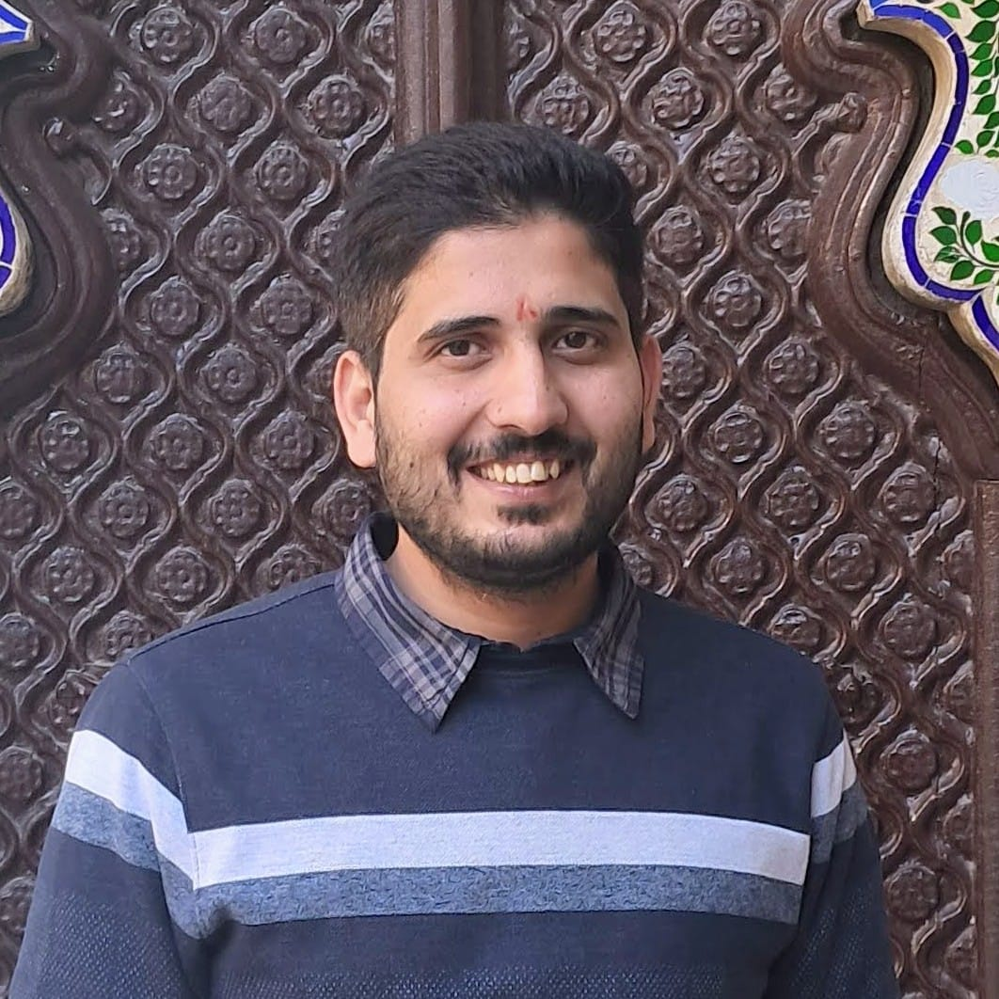

Nitesh Trivedi
Ph.D., Department of Computer Science and Engineering, IIT Kanpur
Email: nitesht@iitk.ac.in
Alternate Email: trivedi.nitesh2008@gmail.com
About Me
I am a Ph.D. student in the Department of Computer Science and Engineering at IIT Kanpur, where I work with Prof. Subhajit Roy. I come from Lucknow, a city with a famously amusing food philosophy: chicken is considered vegetarian if you wear it and non-vegetarian only if you eat it.
My research combines learning and formal reasoning to make software systems safer under uncertainty. I work on verifying probabilistic programs, testing black-box systems, and building fairer machine learning models. I enjoy exploring new domains and have built projects across program verification, web application testing, and ML fairness, grounding my work in fundamental computer science principles.
Research Interests
- Verification of Probabilistic Programs, Invariant Synthesis
- Reachability Analysis for Probabilistic Programs
- Program Synthesis, Specification Inference
- Black-box / Oracle-based Testing
- Fairness and Bias Mitigation in Machine Learning
- SMT Solving, Program Analysis, Automated Testing
- Shielding in Reinforcement Learning
Awards
- Distinguished Paper Award for "Data-Driven Invariant Learning for Probabilistic Programs" at CAV 2022
Publications
-
Data-driven invariant learning for probabilistic programs
Jialu Bao, , Drashti Pathak, Justin Hsu, Subhajit Roy
International Joint Conference on Artificial Intelligence, 2022 -
Data-driven invariant learning for probabilistic programs (Extended Abstract)
Jialu Bao, , Drashti Pathak, Justin Hsu, Subhajit Roy
International Conference on Computer Aided Verification, 2023 -
Data-driven invariant learning for probabilistic programs
Jialu Bao, , Drashti Pathak, Justin Hsu, Subhajit Roy
Formal Methods in System Design, 2024 -
Specification Inference Modulo Oracles for Database-backed Web Applications
and Subhajit Roy
Asian Symposium on Programming Languages and Systems, 2025 -
Mining Statistically Likely k-Reachable States in Probabilistic Programs
Arnab Ray, , Ansuman Banerjee, Arijit Ghosh, Sourav Chakraborty, Subhajit Roy
International Joint Conference on Artificial Intelligence, 2026 -
Fairness needs Attention
and Subhajit Roy
Under Submission